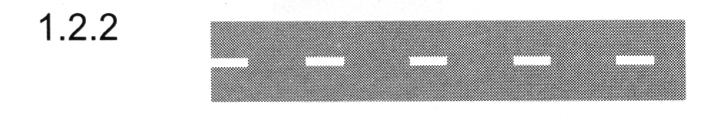

разметка 1.2.2
Приложение 2 (дорожная разметка)
Закон Грузии «О дорожном движении» № 1830-რს, консолидированная редакция 25.06.2026 (Matsne, публикация 36). Юридическую силу имеет грузинский текст, русский — перевод. Источник: Matsne (рус.), Matsne (груз.).

Текст (рус., дословно)
1.2.2. Прерывистая широкая линия, обозначающая край проезжей части на автомобильных дорогах.
Официальный текст (груз.)
1.2.2. წყვეტილი ფართო ხაზი აღნიშნავს საავტომობილო გზაზე სავალი ნაწილის ნაპირს.
Где это в курсе
Уроки
- Выпуск 2. Дорога, проезжая часть, полоса, тротуар, обочина — разбирает, ссылается
Понятия курса
- Разметка края проезжей части 1.2.1/1.2.2 — вводится в выпуске 2
Постоянная ссылка: norm/mark-1.2.2.html